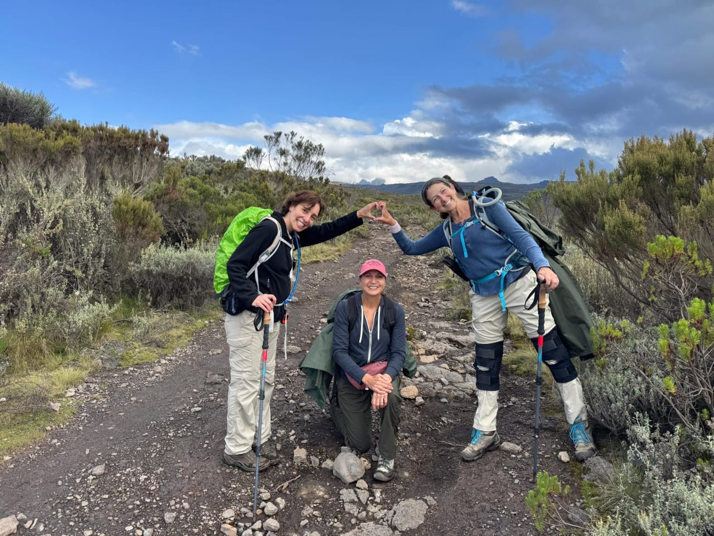

About Juma Adventures
Juma Adventures delivers safari and adventure experiences focused on Kenya’s wildlife, landscapes, and conservation-driven travel.
Why Juma Adventures
Every journey is designed to connect travelers with the wild — responsibly, authentically, and memorably.
Safari & Adventure Gallery

Wildlife encounters showcasing Kenya’s natural hunting scenes.

Vast savannah landscapes stretching across iconic safari regions.

Up-close safari moments with animals in their natural habitat.

Adventure routes through protected wildlife conservation areas.

Rare wildlife sightings captured during guided safari experiences.

Sunset safaris offering calm reflections after thrilling explorations.
Do You Want to Experience Kenya?
Begin your safari journey with Juma Adventures and discover the wild like never before.